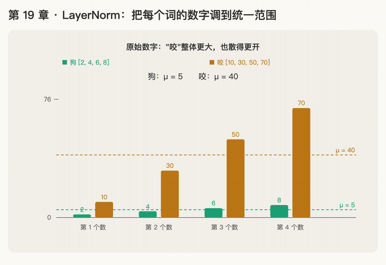

第 19 章 · LayerNorm：把每个词的数字调到统一范围
本章回答：残差一层层往上加，数字会越来越乱，LayerNorm 怎么把它们整理好？它要用到的平均值、方差是什么？
讲解日期：2026-11-05 起 · 上一章：第 18 章 残差连接 · 下一章：第 20 章 前馈网络 FFN
对应原文：materials/text/papers/attention-is-all-you-need-1706.03762.txt§3.1，L131–L133；layernorm-1607.06450.txt§3（L100 起）
本章缩写：Q / K / V = Query（查询）/ Key（键）/ Value（值）；\(d_{model}\)：d = dimension（维度），每个词向量有几个数（论文 512）；FFN = Feed-Forward Network（前馈网络）；LayerNorm / LN = Layer Normalization（层归一化）；RMSNorm = Root Mean Square Normalization（均方根归一化）；BatchNorm = Batch Normalization（批归一化）；softmax = soft（柔和的）+ max（取最大）：按大小分比例，不是只挑最大的；⊙ = element-wise product（逐个相乘，又叫 Hadamard 积）；GPT = Generative Pre-trained Transformer（生成式预训练 Transformer）；LLaMA = Large Language Model Meta AI（Meta 的开源大模型）；PaLM = Pathways Language Model（Google 的大模型）；CS336 = Stanford 课程 CS 336（Computer Science 336，Language Modeling from Scratch）。全部缩写见 附录 · 缩写与术语表
讲解
第一步：为什么要整理：大家"打分松紧"不一样；第一个工具：平均值（2026-11-05）
接第 18 章：残差流 \(x_{12} = x_0 + s_1 + \dots + s_{12}\)，12 条批注一路往上加。有的词加着加着数字变得很大，有的还很小；同一个词在第 2 层和第 10 层，数字的大小也可能差很多。第 7 章讲过，数字太大会让 softmax 饱和，训练也容易不稳。
第 3 章（卡片 R07）提过：LayerNorm 是给每个词的向量自己做一次整理，让它的 512 个数中心对齐、大小统一。论文 L132–L133：每个子层的输出是 \(\text{LayerNorm}(x + \text{Sublayer}(x))\)，也就是第 18 章那个加法做完，马上整理一下。
类比：两个老师打分松紧不一样。
| 三份作业的分数 | 看出什么 | |
|---|---|---|
| A 老师（打分松） | [80, 90, 100] | 第 3 份最好，第 1 份最差 |
| B 老师（打分严） | [50, 60, 70] | 一模一样的排法，只是整体低 30 分 |
两组分数"谁好谁差"的信息完全一样，只是中心不一样。要放在一起比，先把中心对齐。
第一个工具：平均值（mean）：所有数加起来，除以个数。
- A 老师：(80 + 90 + 100) ÷ 3 = 90
- B 老师：(50 + 60 + 70) ÷ 3 = 60
每个数减掉平均值，中心就都挪到了 0：
| 原分数 | 减平均值后 | |
|---|---|---|
| A 老师 | [80, 90, 100] | [−10, 0, 10] |
| B 老师 | [50, 60, 70] | [−10, 0, 10] |
两组变得一模一样，打分松紧的差别没了，"谁好谁差"的信息还在。
公式写法：一个向量有 \(d\) 个数 \(x_1, \dots, x_d\)，平均值记作 \(\mu\)（读作"缪"，希腊字母 mu）：
一句话：LayerNorm 第一步，算出一个词向量的平均值 \(\mu\)，每个数都减掉它，让中心落在 0。
插问：LayerNorm 这个词怎么来的（2026-11-06）
LayerNorm = Layer Normalization 的缩写，论文标题就叫 "Layer Normalization"（layernorm-1607.06450.txt L1）。Transformer 论文 L132 写的是全称 "layer normalization [1]"，[1] 就是这篇论文。
Norm = Normalization（归一化 / 标准化）
- 词根是 normal（标准的、正常的），再往上是拉丁语 norma：木匠用的直角尺，拿来量东西"正不正"。
- normalize = "按标准尺子调一遍"。这里的标准就是：中心在 0（第一步，减平均值），散开的宽度统一（第二步要讲的方差）。
- 注意：数学里还有另一个 norm，指向量的长度 \(\|x\|\)。LayerNorm 里的 Norm 不是这个意思，是 Normalization 砍掉了后半截。
Layer = 层：平均值、方差用"一层里的所有数"一起算
这个名字是和它的前辈 BatchNorm（Batch Normalization） 对比着起的。两者的区别是：平均值和方差拿哪些数来算。
| 拿哪些数算平均值和方差 | 打分类比 | |
|---|---|---|
| BatchNorm | 同一个位置的数，跨一批（batch）样本一起算（摘要 L17–L20） | 把全班每个人的"第 1 题"放一起比 |
| LayerNorm | 同一个样本、同一层里所有的数一起算（摘要 L23–L25；§3 L106–L107） | 只看一个人自己的整张卷子，不看别人 |
摘要 L23–L25 说得很直白：把 batch normalization 改成 layer normalization，平均值和方差改成"在单个训练样本上，用一层所有神经元的输入"来算。
放到 Transformer 里，"一层的所有数"就是一个词在这一层的 512 个数。所以第 3 章（R07）说 LayerNorm 是"每个词自己整理自己"，不和句子里别的词、别的句子掺在一起。第一步的题 1 就是这么算的：只用 [2, 4, 6, 8] 自己的 4 个数。
一句话：Layer（按一层所有的数算）+ Norm（按标准调整）= 用一个词自己的 512 个数算平均值和方差，把它调到统一标准。
第二步：中心对齐了，宽窄还不一样；第二个工具：方差（2026-11-06）
接第一步：减掉平均值，只把中心对齐了。可是有的老师分数拉得开，有的挤在一起。为了好算，这次每个老师只打两份作业：
| 两份作业的分数 | 平均值 | 减平均值后 | |
|---|---|---|---|
| A 老师 | [80, 100] | 90 | [−10, 10] |
| C 老师（拉得更开） | [70, 110] | 90 | [−20, 20] |
中心都是 0 了，但 C 老师的数字散得更开，是 A 的 2 倍。要比，还得量一下"散得多开"。
先试最直接的办法：把"离中心多远"直接平均
A 老师：(−10 + 10) ÷ 2 = 0。C 老师：(−20 + 20) ÷ 2 = 0。
两个都是 0，量不出差别：一正一负抵消了。减完平均值以后，这些数加起来永远是 0，第一步就是这么造出来的。
改进：先平方，再平均。平方以后负数也变成正数，就不会抵消了。这就是方差（variance），记作 \(\sigma^2\)（σ 读作"西格玛"）：
- A 老师：\(\big((-10)^2 + 10^2\big) \div 2 = (100 + 100) \div 2 =\) 100
- C 老师：\(\big((-20)^2 + 20^2\big) \div 2 = (400 + 400) \div 2 =\) 400
方差越大，数字散得越开。
再开个根号，回到原来的单位：标准差（standard deviation）\(\sigma\)。方差是平方过的（分数的平方），开根号变回"分"：
- A 老师：\(\sigma = \sqrt{100} =\) 10：平均每份作业离中心 10 分
- C 老师：\(\sigma = \sqrt{400} =\) 20：平均每份作业离中心 20 分
公式写法（\(\mu\) 是第一步的平均值）：
LayerNorm 论文 Eq. (3)（layernorm-1607.06450.txt L105–L117）算的就是这两个数：\(\mu\) 和 \(\sigma\)，用一层里所有的数一起算（L117："H denotes the number of hidden units in a layer"，H 就是这里的 \(d\)）。L105 说出了目的：固定住每层输入的平均值和方差（"fixing the mean and the variance"）。
一句话：平均值管"中心在哪"，方差 / 标准差管"散得多开"。先减、后平方、再平均，就是方差；再开根号，就是标准差。
第三步：除以标准差，宽窄也统一；再加一个保险 ε（2026-11-06）
接第二步：A 老师减完平均值是 [−10, 10]（σ = 10），C 老师是 [−20, 20]（σ = 20）。中心对齐了，宽窄还差 2 倍。
办法：每个数再除以自己的标准差 σ。
| 减平均值后 | σ | 再除以 σ | |
|---|---|---|---|
| A 老师 | [−10, 10] | 10 | [−1, 1] |
| C 老师 | [−20, 20] | 20 | [−1, 1] |
两个老师变得一模一样：中心在 0，散开的宽度也一样。可以这样理解：除以 σ，就是把单位从"分"换成"几个标准差"。−1 的意思是"比平均低 1 个标准差"。
整理完的向量总是满足两条：平均值 = 0，方差 = 1。这就是第二步里说的"标准"。
保险：ε（读作"艾普西龙"）
如果一个向量所有数都一样呢？比如 [7, 7]：平均值 7，减完是 [0, 0]，σ = 0，再除以 0 就出错了。所以实际写成：
\(\varepsilon\) 是一个很小的数，常用 \(10^{-5}\) = 0.00001（CS336 handout §3.5.1 L963–L964："ε is a hyperparameter that is often fixed at 1e-5"）。平时它小到可以忽略，σ² = 100 时加上 0.00001 几乎不变；只在 σ² 接近 0 的时候兜底，保证分母不是 0。
这一步对照原文：LayerNorm 论文 Eq. (2)（layernorm-1607.06450.txt L83–L89）就是"减 μ，再除以 σ"：\(\bar a_i = \frac{g_i}{\sigma_i}(a_i - \mu_i)\)。式子前面还有一个 \(g_i\)，下一步再讲。
一句话：先减平均值（中心对齐），再除以标准差（宽窄统一），分母里加个很小的 ε 防止除以 0。
第四步：整理完再"放大、挪动"：γ 和 β（2026-11-06）
接第三步：减平均值、除以标准差以后，每个词的 512 个数都被压成"平均 0、方差 1"。可这个标准是我们硬定的，模型未必想要。也许第 37 个位置的数，模型希望它大一点；第 200 个位置，希望它整体偏正一点。一刀切地全压成同一个范围，可能把有用的信息也压掉了。
办法：整理完以后，每个位置再乘一个数、加一个数，这两个数让模型自己学。
- \(\gamma_i\)（gamma，"伽马"）：第 \(i\) 个位置放大几倍，叫 gain（增益）
- \(\beta_i\)（beta，"贝塔"）：第 \(i\) 个位置整体挪多少，叫 bias（偏置）
类比：先换成标准分，再按每一科的规矩换算成成绩单上的分。 各个老师的分数先统一换成标准分（第三步）；换算到成绩单时，每一科（每个位置）有自己的规矩：乘几、加几。这些规矩全校统一（所有词共用同一套 γ、β），不是每个学生自己定；规矩本身是训练时学出来的。
例子：第三步整理完是 \(\hat{x}\) = [−1, −1, 1, 1]，假设学到的 γ = [1, 3, 1, 3]，β = [0, 0, 0.5, 0.5]：
| 位置 | \(\hat{x}_i\) | × \(\gamma_i\) | + \(\beta_i\) | \(y_i\) |
|---|---|---|---|---|
| 1 | −1 | × 1 | + 0 | −1 |
| 2 | −1 | × 3 | + 0 | −3 |
| 3 | 1 | × 1 | + 0.5 | 1.5 |
| 4 | 1 | × 3 | + 0.5 | 3.5 |
要记的几点
- 一个 LayerNorm 有 \(d_{model}\) = 512 个 γ 和 512 个 β，每个位置一对。它们和 \(W^Q\)、\(W^K\) 一样，是训练时学出来的参数。
- 刚开始训练时 γ 全是 1、β 全是 0，也就是"先不改动"（CS336 handout L849 写 RMSNorm 的 gain 初始化为 1）。
- 句子里每个词的 μ、σ 各算各的（第一、二步），但 γ、β 是所有词共用的。
这一步对照原文：LayerNorm 论文 Eq. (4)（layernorm-1607.06450.txt L140–L150）：\(h = f\big(\frac{g}{\sigma} \odot (a - \mu) + b\big)\)。L149–L150 写明 b 和 g 是 bias 和 gain，"of the same dimension as" \(h\)，也就是每个位置一个。摘要 L25–L27 也说：给每个神经元"its own adaptive bias and gain"，在整理之后用。论文里的 g、b 就是这里的 γ、β。
LayerNorm 完整公式（把四步合起来）：
一句话：先统一标准（减 μ、除以 σ），再让模型用自己学的 γ、β，给每个位置定放大多少、挪动多少。
第五步：LayerNorm 放在哪？post-LN 和 pre-LN（2026-11-06）
接第 18 章：每个子层都有一个残差加法，LayerNorm 放在加法的前面还是后面，有两种做法。
| 公式 | 放在哪 | 谁在用 | |
|---|---|---|---|
| post-LN（后整理） | \(x_{\text{新}} = \text{LN}\big(x + \text{Sublayer}(x)\big)\) | 加完以后，把整份结果整理一遍 | 原论文（L132–L133） |
| pre-LN（先整理） | \(x_{\text{新}} = x + \text{Sublayer}\big(\text{LN}(x)\big)\) | 子层看之前先整理，批注直接加回没整理过的 \(x\) | GPT-3、LLaMA、PaLM 等，现在的标准做法 |
类比：第 18 章那份共享文档。
- post-LN：每加一条批注，就把整份文档重新排版一次。主干每层都被改一遍。
- pre-LN：写批注的人先拿一份排好版的复印件来读，写好的批注直接贴回原文档。原文档从头到尾只被"加批注"，从来不被重新排版。
pre-LN 的好处：第 18 章说残差流是 \(x_L = x_0 + s_1 + \dots + s_L\)，是一条从输入直通输出的"高速公路"。pre-LN 让这条路上一个 LayerNorm 都没有，干干净净。CS336 handout §3.5（L937–L951）的说法是 a clean "residual stream" without any normalization，被认为能让梯度传得更顺；还要在最后一个 block 之后补一个 LayerNorm（"an additional layer normalization after the final Transformer block"），因为主干一路没整理过，交给输出层之前要整理一次。
Pre-LN 论文（Xiong et al. 2020，preln-on-layer-normalization-2002.04745.txt 摘要 L15–L39）给了理由：post-LN 在训练刚开始时，靠近输出那几层的梯度很大，必须先用很小的学习率慢慢热身（learning rate warm-up），否则训练会不稳；pre-LN 一开始梯度就很规矩，可以不要这个热身。
一句话：post-LN 是"加完再整理"，主干每层都被整理；pre-LN 是"先整理一份给子层看，批注加回原件"，主干保持干净，现在的大模型都用它。
第六步：RMSNorm：只缩放、不挪中心的简化版（2026-11-06）
接前面四步：LayerNorm 做了两件事。
- 挪中心（re-centering）：减掉平均值 μ
- 统一宽窄（re-scaling）：除以 σ
RMSNorm 论文（Zhang & Sennrich 2019，rmsnorm-1910.07467.txt 摘要 L16–L30）认为第 1 件可以不做（L21–L22："re-centering invariance in LayerNorm is dispensable"），只保留第 2 件。效果差不多，速度快 7%～64%（L29–L30）。
RMS = Root Mean Square，倒着读就是计算顺序：先 Square（平方），再 Mean（平均），最后 Root（开根号）。
和 σ 对比：σ 也是"平方、平均、开根号"，但它先减掉 μ 再平方；RMS 直接拿 \(x_i\) 本身平方，不减 μ。
| 减 μ（挪中心） | 除以什么（统一宽窄） | 整理后乘 / 加 | |
|---|---|---|---|
| LayerNorm | 要 | σ | 乘 γ、加 β |
| RMSNorm | 不要 | RMS | 只乘 g（没有 β） |
例子：x = [1, 7]，g 全 1，ε 忽略。
- RMSNorm：平方 [1, 49] → 平均 (1 + 49) ÷ 2 = 25 → 开根号 RMS = 5 → 除完 [0.2, 1.4]
- LayerNorm：μ = 4 → [−3, 3] → σ = 3 → [−1, 1]
RMSNorm 的结果还是两个正数，中心没被挪到 0；只是整体缩小到"平方平均是 1"（0.2² + 1.4² = 0.04 + 1.96 = 2，÷ 2 = 1）。
谁在用：LLaMA 用 RMSNorm，CS336 作业 1 也照它来（handout §3.5.1 L955–L964："Following Touvron et al. [2023], we will use root mean square layer normalization"；ε 常用 1e-5）。所以现在大模型的标准组合是 pre-LN + RMSNorm。
一句话：RMSNorm 去掉"减平均值"这一步，只除以 RMS（平方 → 平均 → 开根号），再乘一个学出来的 g；更省事，效果差不多。
动画演示：两个词，各自整理成同一个标准

可交互版：animations/19-layernorm.html（要能点按钮、拖滑块，需要用本地服务打开，见 animations/README.md"跑起来看"；滑块给"咬"的每个数都加上 c）。
"狗" = [2, 4, 6, 8]（绿色），"咬" = [10, 30, 50, 70]（橙色）。每个词只用自己的 4 个数算 μ、σ（插问："Layer"的意思）。
怎么看：
- 原始数字：咬整体更大（μ = 40 vs 5），也散得更开；
- 第一步：各自减掉自己的 μ，中心都到 0，但咬还宽得多；
- 第二步：阴影是中心 ± σ：狗 σ ≈ 2.24，咬 σ ≈ 22.36；
- 第三步：各自除以 σ，两个词变成一模一样的 [−1.34, −0.45, 0.45, 1.34]；
- 第四步：乘 γ、加 β，两个词用同一套，结果仍然一样；
- RMSNorm：不减 μ，只除以 RMS，结果全是正数，两个词也不完全一样；
- 滑块：给咬整体加 c，LayerNorm 结果纹丝不动（减 μ 把加的 c 抵消了），RMSNorm 结果跟着变；c = −40 时咬的 μ 正好是 0，两种结果一样。
练习与作答记录
题 1：一个词向量是 [2, 4, 6, 8]。它的平均值是多少？每个数减掉平均值后是什么？
作答（2026-11-06）："1=5，2=-3，-1，1，3"
✓ 平均值 (2 + 4 + 6 + 8) ÷ 4 = 20 ÷ 4 = 5；减掉 5 以后是 [−3, −1, 1, 3]，中心落在 0。每个数都和原来一样隔 2，只是整体往下挪了 5。
题 2：接着用题 1 的结果 [−3, −1, 1, 3]。 （a）把这 4 个数直接平均，得多少？ （b）它的方差 \(\sigma^2\) 是多少？（先平方，再平均）
作答（2026-11-06）："0，5"
✓（a）(−3 − 1 + 1 + 3) ÷ 4 = 0：一正一负抵消，所以直接平均量不出散得多开。（b）平方后 [9, 1, 1, 9]，加起来 20，÷ 4 = 5。标准差 σ = √5 ≈ 2.24。
题 3： （a）把向量 [1, 1, 5, 5] 整个做一遍：先减平均值，再除以标准差（ε 先忽略）。结果是什么？ （b）向量 [3, 3, 3, 3] 的标准差 σ 是多少？如果分母里不加 ε，会出什么问题？
作答（2026-11-06）："a=-1,-1,1,1 b=0,不加就无法除了"
✓（a）平均值 3，减完是 [−2, −2, 2, 2]，方差 (4 + 4 + 4 + 4) ÷ 4 = 4，σ = 2，除完是 [−1, −1, 1, 1]。（b）所有数一样，减完是 [0, 0, 0, 0]，σ = 0，分母是 0，没法除。加上 ε 以后分母是 √0.00001 ≈ 0.003，算出来是 [0, 0, 0, 0]，不会出错。
题 4：第三步整理完是 \(\hat{x}\) = [−1, −1, 1, 1]。假设模型学到的 γ 全是 2，β 全是 3。 （a）\(y = \gamma \hat{x} + \beta\) 是多少？ （b）和题 3 原来的向量 [1, 1, 5, 5] 比一比，你发现了什么？
作答（2026-11-06）："这个没动，你解答下"
✗ 没做出来，下面是讲解。
（a）一个位置一个位置算：每个数先乘 γ（2），再加 β（3）。
| 位置 | \(\hat{x}_i\) | × 2 | + 3 | \(y_i\) |
|---|---|---|---|---|
| 1 | −1 | −2 | +3 | 1 |
| 2 | −1 | −2 | +3 | 1 |
| 3 | 1 | 2 | +3 | 5 |
| 4 | 1 | 2 | +3 | 5 |
y = [1, 1, 5, 5]。
（b）y 和原来的向量一模一样，整理被完全撤销了。 原因是题 3 里：
- 原向量的平均值 μ = 3，标准差 σ = 2
- 这里恰好 γ = 2 = σ，β = 3 = μ
整理是"减 3、除以 2"，γ 和 β 是"乘 2、加 3"，正好是倒着做一遍，两步互相抵消。
这说明什么：有了 γ、β，LayerNorm 最多是"帮模型统一了标准"，不会硬性夺走模型需要的大小信息。真要原来的大小，模型能学着把它放回去。这和第 18 章残差的思路很像：加了这一步，最坏情况也能退回原样。
一个限制：γ、β 是所有词共用的，可每个词的 μ、σ 各不相同。所以它不能对每个词都正好撤销，只能给每个位置定一个统一的放大和挪动。比如这题的 γ = 2、β = 3 只对 [1, 1, 5, 5] 正好撤销，换一个 μ、σ 不同的词就不行。
再练 4：第三步整理完是 \(\hat{x}\) = [−1, 1]，γ 全是 3，β 全是 5。 （a）\(y = \gamma \hat{x} + \beta\) 是多少？ （b）把 y 当作原向量，算它的平均值 μ 和标准差 σ。和 γ、β 比，你发现了什么？
作答（2026-11-06）："（a）y = γ·x̂ + β 是多少？讲解下"
卡在 \(\gamma \cdot \hat{x} + \beta\) 怎么算。拆开讲（换一组数，不剧透原题）：
- \(\hat{x}\) 是一串数，\(\gamma \cdot \hat{x}\) 就是这串数里每一个都乘 γ；"+ β" 就是每一个再加 β。一个格子一个格子算，格子之间互不影响。
- 负数乘正数：先当正数乘，结果再带上负号。−1 × 2 = −2。
- 负数加正数：在数轴上从 −2 往右走 1 格，−2 + 1 = −1。
例子：\(\hat{x}\) = [−1, 1]，γ = 2，β = 1。
| 位置 | \(\hat{x}_i\) | 先 × γ（2） | 再 + β（1） | \(y_i\) |
|---|---|---|---|---|
| 1 | −1 | −1 × 2 = −2 | −2 + 1 = −1 | −1 |
| 2 | 1 | 1 × 2 = 2 | 2 + 1 = 3 | 3 |
y = [−1, 3]。
再练 4（a）重做：照上面的表，γ 换成 3、β 换成 5，\(\hat{x}\) = [−1, 1] 不变，y 是多少？
作答（2026-11-06）："2，8"
✓ −1 × 3 + 5 = −3 + 5 = 2；1 × 3 + 5 = 3 + 5 = 8。y = [2, 8]。
再练 4（b）：把 [2, 8] 当成原向量，按第一到三步算它的平均值 μ 和标准差 σ。和 γ = 3、β = 5 比，你发现了什么？
作答（2026-11-06）："正好就是3，5"
✓ 发现对了。补全过程，顺便把对应关系记牢：平均值 μ = (2 + 8) ÷ 2 = 5，减完是 [−3, 3]，方差 (9 + 9) ÷ 2 = 9，σ = 3。所以 γ = 3 = σ，β = 5 = μ：γ 对标准差（放大多少），β 对平均值（挪到哪）。γ、β 正好把"减 μ、除以 σ"倒着做了一遍。
题 5：第 18 章的例子，输入 x = [1.46, 1.27]，某个子层没话说，批注是 [0, 0]。已知 LN([1.46, 1.27]) ≈ [1, −1]（γ 全 1、β 全 0；μ = 1.365，σ = 0.095）。 （a）pre-LN：\(x + \text{Sublayer}(\text{LN}(x))\)，输出是多少？ （b）post-LN：\(\text{LN}(x + \text{Sublayer}(x))\)，输出是多少？ （c）哪一种让主干上的 x 原样通过？
作答（2026-11-06）："你来做下这个计算过程"
✗ 没做，下面是完整过程。
先把 LN(x) 算一遍（验证 ≈ [1, −1]）：
- 平均值：μ = (1.46 + 1.27) ÷ 2 = 2.73 ÷ 2 = 1.365
- 减平均值：1.46 − 1.365 = 0.095，1.27 − 1.365 = −0.095 → [0.095, −0.095]
- 方差：(0.095² + 0.095²) ÷ 2 = 0.095² = 0.009025；σ = √0.009025 = 0.095
- 除以 σ：0.095 ÷ 0.095 = 1，−0.095 ÷ 0.095 = −1 → [1, −1]（加上 ε 后约是 [0.9994, −0.9994]，看作 [1, −1]）
（a）pre-LN：\(x + \text{Sublayer}(\text{LN}(x))\)，从括号最里面往外算：
| 步骤 | 做什么 | 结果 |
|---|---|---|
| ① | LN(x)：整理一份复印件给子层看 | [1, −1] |
| ② | Sublayer(…)：子层读完没话说 | [0, 0] |
| ③ | x + 批注：加回原件 x | [1.46, 1.27] + [0, 0] = [1.46, 1.27] |
（b）post-LN：\(\text{LN}(x + \text{Sublayer}(x))\)，也从里往外：
| 步骤 | 做什么 | 结果 |
|---|---|---|
| ① | Sublayer(x)：子层没话说 | [0, 0] |
| ② | x + 批注 | [1.46, 1.27] + [0, 0] = [1.46, 1.27] |
| ③ | LN(…)：把加完的结果整理一遍 | [1, −1] |
（c）pre-LN 让 x 原样通过。 同样是"没话说"的子层：pre-LN 出来还是 [1.46, 1.27]，和第 18 章残差透传一样；post-LN 出来变成 [1, −1]，原来"1.46 和 1.27 有多大"的信息被整理掉了。这就是"pre-LN 主干干净"的意思：LN 只作用在给子层看的复印件上，不碰主干。
再练 5：输入 x = [3, 5]，子层没话说，批注 [0, 0]（γ 全 1、β 全 0，ε 忽略）。 （a）先算 LN([3, 5])。 （b）pre-LN 的输出是多少？ （c）post-LN 的输出是多少？
作答（2026-11-06）："-1，1"
✓（a）LN([3, 5]) = [−1, 1]：μ = (3 + 5) ÷ 2 = 4，减完 [−1, 1]，方差 (1 + 1) ÷ 2 = 1，σ = 1，除完还是 [−1, 1]。（b）（c）还没答。
再练 5（b）（c）：接着用 x = [3, 5]、批注 [0, 0]、LN(x) = [−1, 1]。pre-LN 的输出是多少？post-LN 的输出是多少？
作答（2026-11-06）："3，5"
✓（b）pre-LN：LN(x) = [−1, 1] 给子层看 → 批注 [0, 0] → 加回原件 [3, 5] + [0, 0] = [3, 5]，原样通过。（c）还没答。
再练 5（c）：post-LN 的输出是多少？
作答（2026-11-06）："-1，1"
✓ [3, 5] + [0, 0] = [3, 5]，再整理成 [−1, 1]。再练 5 全对：同一个"没话说"的子层，pre-LN 出来 [3, 5]（原样），post-LN 出来 [−1, 1]（大小被整理掉）。
题 6：RMSNorm（g 全 1，ε 忽略）。 （a）RMSNorm([1, 1, 7, 7]) 是多少？ （b）RMSNorm([3, 3, 3, 3]) 是多少？题 3（b）里 LayerNorm 碰到 [3, 3, 3, 3] 会出问题，RMSNorm 呢？
作答（2026-11-06）："这个我理解了，习题忽略"
跳过。参考答案留给复习用：（a）平方 [1, 1, 49, 49]，平均 25，RMS = 5，结果 [0.2, 0.2, 1.4, 1.4]。（b）平方平均 9，RMS = 3，结果 [1, 1, 1, 1]，不会出问题：RMS 只有在所有数都是 0 时才是 0；LayerNorm 的 σ 只要所有数相等就是 0。
口诀
先减平均对中心，再除标准差统一宽窄；
分母加个 ε，防止除以 0；
整理完乘 γ 加 β，模型自己定大小；
pre-LN 先整理给子层看，批注加回原件；RMSNorm 不减平均，只除 RMS。
本章复习卡片
- R50（平均值 μ：LayerNorm 第一步，减掉平均值让中心落在 0；[2, 4, 6, 8] → [−3, −1, 1, 3]）
- R51（LayerNorm 名字：Layer = 用一层所有的数算，Norm = Normalization；和 BatchNorm 的区别）
- R52（方差 σ²：先减、后平方、再平均；直接平均会一正一负抵消成 0）
- R53（整理一个向量：减 μ、除以 \(\sqrt{\sigma^2+\varepsilon}\)；[1, 1, 5, 5] → [−1, −1, 1, 1]；ε 防止除以 0）
- R54（γ、β：每个位置乘 γ、加 β；γ = σ、β = μ 时把整理撤销；但所有词共用）
- R55（post-LN vs pre-LN：公式、从里往外算；pre-LN 让主干原样通过）
- R56（RMSNorm：不减 μ，只除以 RMS，只乘 g 没有 β；LLaMA、CS336 在用）
附录 · 延伸阅读
留给以后深入学习用，不影响本章主线。★ 是建议先读的。
- 本地论文的文本版在materials/text/papers/，表里的行号就是指这个文本版。
- CS336 handout 在cs336-spring2025/materials/text/cs336_spring2025_assignment1_basics.txt。
推荐阅读
| 读什么 | 读哪里 | 读它为了什么 |
|---|---|---|
| ★ Attention Is All You Need | §3.1 L131–L133 | 本章原文：每个子层输出 \(\text{LayerNorm}(x + \text{Sublayer}(x))\)，也就是 post-LN；引用 [1] 就是下面的 LayerNorm 论文 |
| ★ Ba, Kiros & Hinton 2016，Layer Normalization | 摘要 L17–L27；§2 Eq. (2) L80–L92；§3 Eq. (3) L100–L120；Eq. (4) L140–L150 | 名字和公式的出处：摘要说清 BatchNorm vs LayerNorm（插问）；Eq. (2) 是"减 μ、除以 σ、乘 g"（第三、四步）；Eq. (3) 是 μ、σ 用一层所有的数算（第一、二步）；Eq. (4) L149–L150 说 g、b 和 h 一样长（第四步） |
| ★ CS336 assignment 1 handout | §3.5 L937–L951；§3.5.1 L953–L990 | 动手要写的版本：pre-norm（第五步）+ RMSNorm（第六步），ε = 1e-5，gain 初始化为 1（L849）；作业 Problem (rmsnorm) 在 L982 |
| Xiong et al. 2020，On Layer Normalization in the Transformer Architecture | preln-on-layer-normalization-2002.04745.txt 摘要 L15–L39 |
第五步的理论依据：post-LN 开头输出层附近梯度大，需要 warm-up；pre-LN 不需要 |
| Zhang & Sennrich 2019，Root Mean Square Layer Normalization | rmsnorm-1910.07467.txt 摘要 L16–L30；引言 L44–L55 |
第六步的出处：认为"挪中心"可以不做，只留 RMS 缩放，快 7%～64% |
数学原理
- 减完平均值的数加起来是 0：\(\sum_i (x_i - \mu) = \sum_i x_i - d\mu = d\mu - d\mu = 0\)。所以要量"散得多开"必须先平方（第二步、题 2）。
- 整理后平均 0、方差 1：\(\hat x_i = (x_i-\mu)/\sigma\)，平均值 \(\frac{1}{d}\sum \hat x_i = 0\)；方差 \(\frac{1}{d}\sum \hat x_i^2 = \sigma^2/\sigma^2 = 1\)（第三步，忽略 ε）。
- 平移不变（re-centering invariance）：每个数都加 c，μ 也加 c，σ 不变，所以 LayerNorm 结果不变；RMSNorm 没有减 μ，没有这个性质（动画滑块）。
- 缩放不变（re-scaling invariance）：每个数都乘 k（k > 0），μ、σ、RMS 都乘 k，LayerNorm 和 RMSNorm 的结果都不变（RMSNorm 论文 L24）。
- γ、β 能撤销整理：取 \(\gamma_i = \sigma\)、\(\beta_i = \mu\)，\(y_i = \sigma \cdot \frac{x_i-\mu}{\sigma} + \mu = x_i\)（题 4、再练 4）。但 γ、β 所有词共用，只能对某一组 μ、σ 正好撤销。
- 当 μ = 0 时 RMS = σ：\(\text{RMS}^2 = \frac{1}{d}\sum x_i^2\)，\(\sigma^2 = \frac{1}{d}\sum x_i^2 - \mu^2\)。所以 RMSNorm 和 LayerNorm（不看 β）只差"减不减 μ"。
公式清单
| 公式 | 意思 |
|---|---|
| \(\mu = \frac{1}{d}\sum_i x_i\) | 平均值：中心在哪 |
| \(\sigma^2 = \frac{1}{d}\sum_i (x_i-\mu)^2\)，\(\sigma = \sqrt{\sigma^2}\) | 方差 / 标准差：散得多开 |
| \(\hat x_i = \frac{x_i-\mu}{\sqrt{\sigma^2+\varepsilon}}\) | 整理：平均 0、方差 1；ε ≈ 1e-5 防止除以 0 |
| \(\text{LayerNorm}(x)_i = \gamma_i \hat x_i + \beta_i\) | 完整 LayerNorm：γ、β 每个位置一对，学出来 |
| \(\text{LN}(x + \text{Sublayer}(x))\) | post-LN（原论文） |
| \(x + \text{Sublayer}(\text{LN}(x))\) | pre-LN（GPT-3、LLaMA），最后补一个 LN |
| \(\text{RMSNorm}(x)_i = \frac{x_i}{\sqrt{\frac{1}{d}\sum_j x_j^2+\varepsilon}}\, g_i\) | RMSNorm：不减 μ，没有 β |